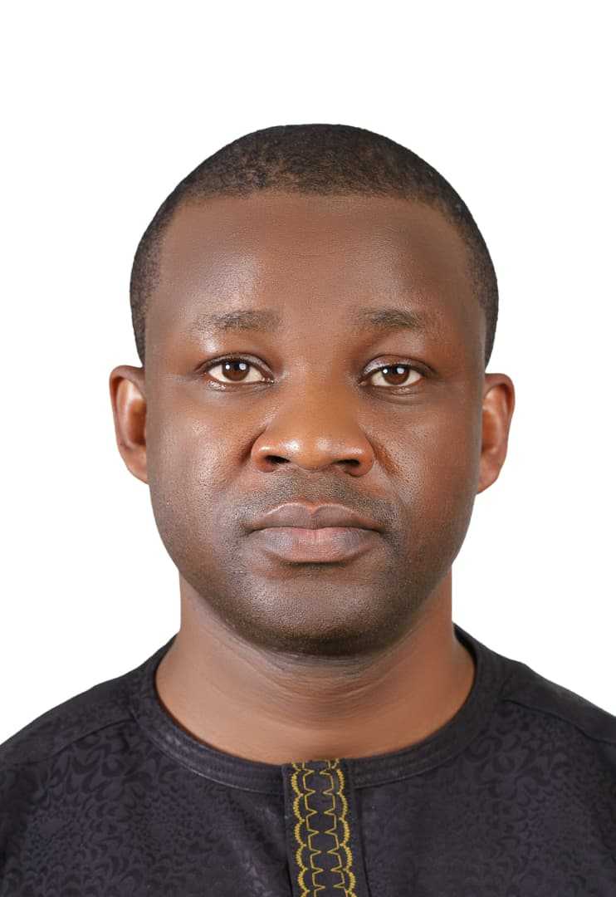
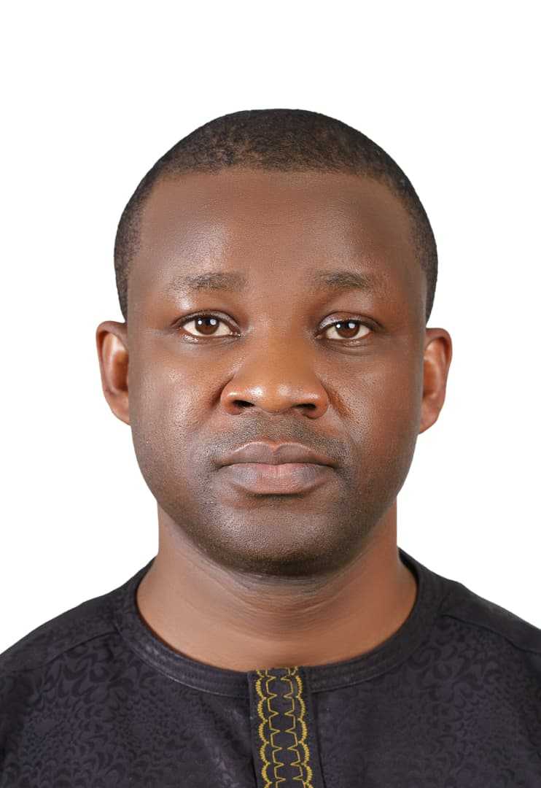
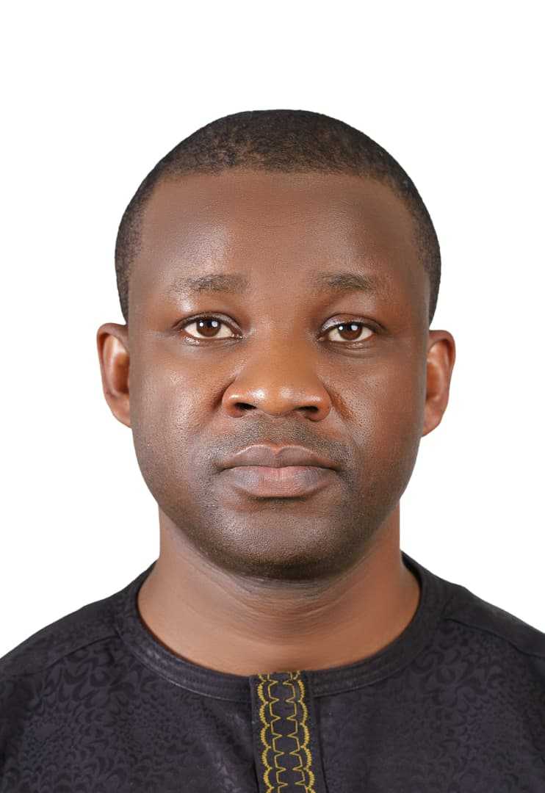

Dr. Olakunle John Daramola
Technical Adviser to Honourable Minister
Federal Ministry of Health
üìû Phone: +234 806 225 5012
✉️ Email: dokitakunle@gmail.com

Federal Ministry of Health
üìû Phone: +234 806 225 5012
✉️ Email: dokitakunle@gmail.com